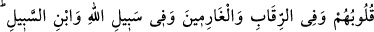

“–İsabet ettiniz.” buyurdu.
Allah’ı zikirle meşgul olan üçüncü bir topluluğa rastladı. Onlara da zikirlerinin
sebebini sordu. Onlar ise:
“Biz Allah’ı ne azabından korktuğumuz için ne de sevaba nâil olmak için zikrediyoruz.
Bilakis biz zikri, kulluğumuzun zayıflığını ve önemsizliğini (zilletini) ortaya koymak,
Allah’ın rubûbiyyetinin izzetini ızhar etmek, kalbimizi ma‘rifetullah ile, dilimizi de
Allah’ın kuds ve izzet sıfatlarına delalet eden lafızlarla şereflendirmek için yapıyoruz.”
dediler.
Bunun üzerine Hz. İsa: “İşin hakîkatini kavrayanlar, sizsiniz.” dedi.
Bu mânâya gelmek üzere Hâfız demiştir ki:
Cennet bahçesini iki buğday tanesine sattı babam
Ben dünya bahçesini bir arpaya satmazsam nâmerdim
60. Sadakalar (zekatlar) Allah’tan bir farz olarak ancak fakirlere, düşkünlere,
onlar üzerinde çalışanlara, kalpleri ısındırılacak olanlara, (hürriyetlerini satın
almaya çalışan) kölelere, borçlulara, Allah yolunda cihâd edenlere ve yolcuya
mahsustur. Allah pek iyi bilendir, hüküm ve hikmet sahibidir.
“Sadakalar” yâni iki nakit (altın, gümüş) ve diğer muhtelif nevilerine şâmil olan
zekat cinsi.
el-Kâfî’de zikredildiğine göre zekata “sadaka” denilmiştir, çünkü kulun Allah’a
kulluğundaki sadâkatini gösterir. el-Ezâhîr adlı eserde şöyle zikredilir: “Sadaka”
kelimesinin terkîbi, söz ve fiil yönünden bir şeyde kuvvete delâlet eder. Sadaka olarak
verdiği şeyin kuvveti sayesinde kişinin başına gelecek belâ geri çevrildiği için
bağışladığı şeye “sadaka” adı verilmiştir.” Şöyle diyenler de vardır: Peygamber
Efendimiz (s.a.)’in zekat toplamak üzere gönderdiği ilk memur (âmil),
Sıdkoğulları’ndan bir kişidir. Sıdkoğulları, Kinde’den bir kavimdir. Bu kavme mensup
olanlara “Sadakî” denilir. İşte “sadaka” kelimesi, onların isminden türemiştir.
“Allah’tan bir farz olarak” Kâşifî der ki: Hak -Sübhânehû ve Teâlâ- zekatı şu
kimselere verilmek üzere farz kıldı. Farz kılınmasının gerekliliği, Allah Teâlâ katından
sâbit olmasıdır.
Zekatlar, şu sekiz sınıfa mahsustur, bunların dışında kalan münâfıklara verilmez:
“ancak fakirlere,” Fakir; zekat için gerekli olan nisâbın altında mala sahip olan kişi